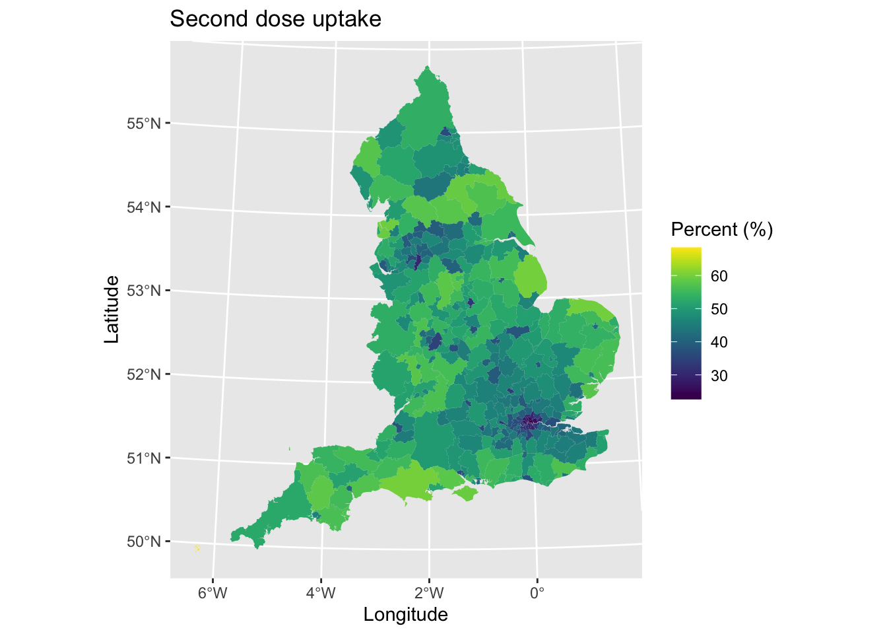
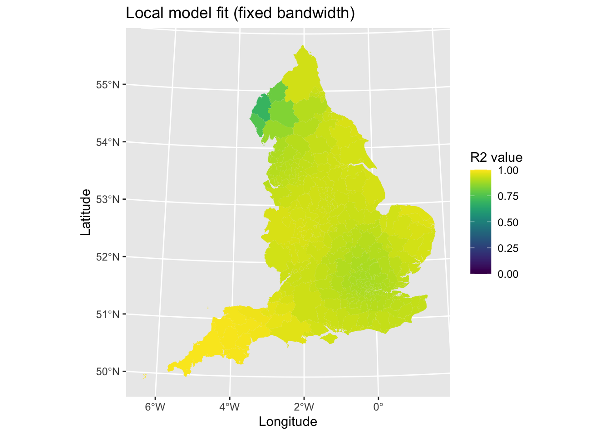
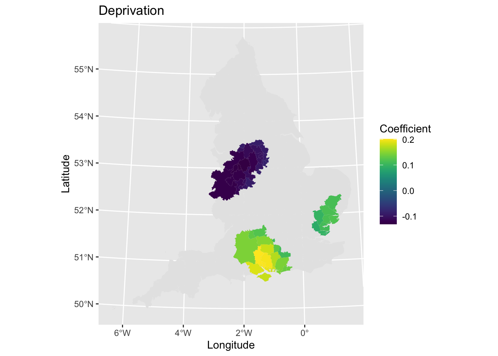

Chapter 4 Geographically Weighted Regression
In our last session (boo), we extend the spatial regression approach to explore the concept of spatially varying coefficients. The lecture slides for this practical can be found here. A PDF version of the practical can be found here.
4.1 Loading data
We will use the same data introduced in the previous session. We will this time look at second dose uptake to mix it up. Let’s quickly load in the data and tidy it.
# Load package
library(sf)## Registered S3 methods overwritten by 'tibble':
## method from
## format.tbl pillar
## print.tbl pillar## Linking to GEOS 3.7.2, GDAL 2.4.2, PROJ 5.2.0# Load and clean spatial data
lad_uk <- read_sf("./Shapefiles/UK_LAD/Local_Authority_Districts_(December_2019)_Boundaries_UK_BFC.shp") # Load shapefile for Local Authority Districts (LADs) for UK (sorry but could not find only England version so need to convert to match data)
lad_uk$country <- substr(lad_uk$lad19cd, 0, 1) # Record first letter of LAD code (denotes country)
lad_eng <- lad_uk[lad_uk$country == "E",] # Subset only English LADs
# Tidy and join on explanatory variables
lad_data <- read.csv("./Data/LAD_vaccine_data.csv") # Load vaccine uptake and demographic data for England
lad_eng <- merge(lad_eng, lad_data, by.x = "lad19cd", by.y = "ltla_code", all.x = TRUE) # Join on both datasets
lad_eng$pop_density <- lad_eng$population / (lad_eng$st_areasha / 1000000) # Calculate population density (st_areashape is measured in metres^2 so need to convert to km^2 by dividing by 1,000,000)
lad_eng$percent_first_dose <- (lad_eng$total_first_dose / lad_eng$population) * 100 # Calculate percent of population who have had their first dose
lad_eng$percent_second_dose <- (lad_eng$total_second_dose / lad_eng$population) * 100 # Calculate percent of population who have had their first dose
# Remove objects to save space
rm(lad_uk, lad_data) Let’s have a look at the spatial pattern of the variable.
# Load packages
library(ggplot2)
library(viridis)## Loading required package: viridisLite# Plot
map1 <- ggplot() + # Call ggplot command
geom_sf(data = lad_eng, aes(fill = percent_second_dose), lwd = 0) + # Define what to plot
scale_fill_viridis() + # Make colourblind friendly
xlab("Longitude") + # Add x-axis label
ylab("Latitude") + # Add y-axis label
labs(title = "Second dose uptake", # Edit plot title
fill = "Percent (%)") # Edit legend title
map1 # Print plot
We can see lower uptake in urban areas and higher uptake in rural regions. This is likely reflecting differences in the age-structure of areas.
Let’s use a standard linear regression model to examine the factors that are associated with the percentage of individuals who are fully vaccinated (i.e., received their second vaccine dose). This will be useful to compare to the Geographically Weighted Regression (GWR) model later.
model1 <- lm(percent_second_dose ~ median_age + Other_White + Mixed + Black + Asian + Other + mean_imd_score + pop_density, data = lad_eng) # OLS model
summary(model1) # Print model results##
## Call:
## lm(formula = percent_second_dose ~ median_age + Other_White +
## Mixed + Black + Asian + Other + mean_imd_score + pop_density,
## data = lad_eng)
##
## Residuals:
## Min 1Q Median 3Q Max
## -17.9897 -1.5236 -0.1079 1.4989 14.1068
##
## Coefficients:
## Estimate Std. Error t value Pr(>|t|)
## (Intercept) 4.7972830 2.4171174 1.985 0.048063 *
## median_age 1.0410090 0.0486634 21.392 < 2e-16 ***
## Other_White -0.1070692 0.0520983 -2.055 0.040709 *
## Mixed 0.1228759 0.1817387 0.676 0.499476
## Black -0.1811159 0.0587695 -3.082 0.002243 **
## Asian -0.0259803 0.0244621 -1.062 0.289039
## Other -0.1225451 0.1258458 -0.974 0.330934
## mean_imd_score 0.0204583 0.0220153 0.929 0.353474
## pop_density -0.0004277 0.0001139 -3.756 0.000206 ***
## ---
## Signif. codes: 0 '***' 0.001 '**' 0.01 '*' 0.05 '.' 0.1 ' ' 1
##
## Residual standard error: 2.616 on 308 degrees of freedom
## Multiple R-squared: 0.8804, Adjusted R-squared: 0.8773
## F-statistic: 283.5 on 8 and 308 DF, p-value: < 2.2e-16The model results suggest the following associations:
- Median age of a Local Authority is positively associated with the percentage of the population who have had their second vaccine dose, so that older populations had more fully vaccinated individuals
- Greater percentages of areas with Black or Other White ethnic groups had lower uptake, with a negative association detected.
- Population density was negatively associated to vaccination uptake, with uptake decreasing with increasing population density.
4.2 Selecting bandwidths
GWR is a technique that allows us to examine how associations between variables may vary across space. It works through selecting a ‘search window’ (here defined as surrounding areas) over each data point (Local Authority District in our example), estimating a regression equation (for the data point and data points in the search window, with closer neighbouring data points given larger weightings), and then repeating the process for all data points. This means the process estimates n regression equations each time (you can probably see here how it can become computationally intensive). The result is a series of regression coefficients for each variable and each area, allowing us to explore how coefficients vary across space.
To be able to estimate a model, we need to define the ‘search window.’ This consists of two components: (i) a spatial kernel, and (ii) bandwidth. The spatial kernel refers to the weighting mechanism that gives greater importance/weighting to data points located closer to each data point (and vice versa), and the extent that the weighting changes with distance. The kernel can be fixed (i.e., the same bandwidth, such as a fixed distance, is used for each regression) or adaptive (i.e., varying bandwidths are used, such as nearest number of neighbours). Bandwidith is the extent of the kernel (i.e., how big an area it covers).
We can optimise the bandwidth value using a cross-validation. Here we estimate a regression model for a particular location with a set bandwidth value. We then compare the predicted outcome value for the model to the observed/actual value, which gives us the residual error. We can then vary the bandwidth value and see how the residual changes, with the aim of minimising it.
library(spgwr) # Load package## Loading required package: sp## Loading required package: spData## To access larger datasets in this package, install the spDataLarge
## package with: `install.packages('spDataLarge',
## repos='https://nowosad.github.io/drat/', type='source')`## NOTE: This package does not constitute approval of GWR
## as a method of spatial analysis; see example(gwr)fixed_bandwidth <- gwr.sel(percent_second_dose ~ median_age + Other_White + Mixed + Black + Asian + Other + mean_imd_score + pop_density, data = lad_eng, coords = cbind(lad_eng$long, lad_eng$lat), adapt = FALSE, method = "cv", longlat = TRUE) # Select best fixed bandwidth for GWR (can be slow)## Bandwidth: 307.6284 CV score: 2247.438
## Bandwidth: 497.2562 CV score: 2262.816
## Bandwidth: 190.4319 CV score: 2214.023
## Bandwidth: 118.0005 CV score: 2122.952
## Bandwidth: 73.23547 CV score: 1992.08
## Bandwidth: 45.56914 CV score: 1916.536
## Bandwidth: 28.47041 CV score: 2227.318
## Bandwidth: 56.13674 CV score: 1935.575
## Bandwidth: 34.26881 CV score: 1958.648
## Bandwidth: 47.28953 CV score: 1916.081
## Bandwidth: 46.99495 CV score: 1916.017
## Bandwidth: 46.81922 CV score: 1916.005
## Bandwidth: 46.81148 CV score: 1916.005
## Bandwidth: 46.81257 CV score: 1916.005
## Bandwidth: 46.81261 CV score: 1916.005
## Bandwidth: 46.81253 CV score: 1916.005
## Bandwidth: 46.81257 CV score: 1916.005fixed_bandwidth## [1] 46.81257The output prints details of the model fitting process, but you can switch this off by adding verbose = FALSE. The optimised bandwidth for our model is 46.8125698 kilometers (km). The value suggests that a fixed radius of this distance is set and placed around each data point (area).
Let’s repeat the process, but this time estimate an adaptive bandwidth. This will be useful for comparing model fit later.
adaptive_bandwidth <- gwr.sel(percent_second_dose ~ median_age + Other_White + Mixed + Black + Asian + Other + mean_imd_score + pop_density, data = lad_eng, coords = cbind(lad_eng$long, lad_eng$lat), adapt = TRUE, method = "cv", longlat = TRUE, verbose = TRUE) # Select best adaptive bandwidth for GWR (can be slow)## Adaptive q: 0.381966 CV score: 2125.007
## Adaptive q: 0.618034 CV score: 2211.108
## Adaptive q: 0.236068 CV score: 2016.777
## Adaptive q: 0.145898 CV score: 1964.669
## Adaptive q: 0.09016994 CV score: 1900.774
## Adaptive q: 0.05572809 CV score: 1837.333
## Adaptive q: 0.03444185 CV score: 1760.934
## Adaptive q: 0.02128624 CV score: 1691.024
## Adaptive q: 0.01315562 CV score: 1797.949
## Adaptive q: 0.02480104 CV score: 1712.084
## Adaptive q: 0.01818062 CV score: 1718.198
## Adaptive q: 0.02169819 CV score: 1689.364
## Adaptive q: 0.02211599 CV score: 1688.373
## Adaptive q: 0.02314159 CV score: 1696.927
## Adaptive q: 0.02250172 CV score: 1691.397
## Adaptive q: 0.0220753 CV score: 1688.142
## Adaptive q: 0.02196273 CV score: 1688.48
## Adaptive q: 0.0220323 CV score: 1688.268
## Adaptive q: 0.0220753 CV score: 1688.142adaptive_bandwidth## [1] 0.0220753Here the value of 0.0220753 presents the optimal proportion of neighbours (or k-nearest neighbours) to select as the bandwidth. In this example, we should select 2.2075297% of areas surrounding each data point (or nearest neighbours), or equivalent to selecting nrow(lad_eng) * adaptive_bandwidth areas around each data point each time we run a regression.
4.3 Running the model
Now that we are ready to fit our GWR model, there are two key areas we need to concentrate on when interpreting any GWR model: (i) model fit, and (ii) the meaning of spatially varying coefficients.
4.3.1 Assessing model fit
We have so far two types of bandwidth to use in fitting our GWR model. We need to identify which we will use for reporting our results. To make a decision, we will fit two GWR models, one for each of the two bandwidths, and compare their model fits to see which performs better.
# Model with fixed bandwidth
model2_fixed <- gwr(percent_second_dose ~ median_age + Other_White + Mixed + Black + Asian + Other + mean_imd_score + pop_density, data = lad_eng, coords = cbind(lad_eng$long, lad_eng$lat), bandwidth = fixed_bandwidth, hatmatrix = TRUE, se.fit = TRUE, longlat = TRUE)
# Model with adaptive bandwidth
model2_adapt <- gwr(percent_second_dose ~ median_age + Other_White + Mixed + Black + Asian + Other + mean_imd_score + pop_density, data = lad_eng, coords = cbind(lad_eng$long, lad_eng$lat), adapt = adaptive_bandwidth, hatmatrix = TRUE, se.fit = TRUE, longlat = TRUE) # note we use adapt for the bandwidth hereLet’s compare the overall model fit for both of these models. We will just look at the corrected AIC values
model2_fixed$results$AICh # AIC - fixed bandwidth## [1] 1348.313model2_adapt$results$AICh # AIC - adaptive bandwidth## [1] 1246.369# model2_fixed$results$AICb # AIC corrected for small sample sizes - fixed bandwidth
# model2_adapt$results$AICb # AIC corrected for small sample sizes - adaptive bandwidthThe adaptive bandwidth model has better fit (lower value) and therefore may be preferable on this statistic.
We will next compare the compare the range of local r2 values, to assess model fit performance of our regression models..
summary(model2_fixed$SDF$localR2)## Min. 1st Qu. Median Mean 3rd Qu. Max.
## 0.6948 0.9080 0.9268 0.9249 0.9409 0.9999summary(model2_adapt$SDF$localR2)## Min. 1st Qu. Median Mean 3rd Qu. Max.
## 0.8521 0.9513 0.9664 0.9607 0.9733 0.9925Mean and median R2 is higher with the adaptive bandwidth selected, suggesting that on average each areas model fit is better here. If we look at the minimum values, model fit is poorer for the fixed bandwidth as well suggesting the model does less well in particular areas.
Next, we compare the local model fit values to see if one of the models is under/over-performing in particular parts of England. This can give us clues towards whether there are geographical issues in model fit. For example, the use of fixed bandwidths can often lead to too many dissimilar data points selected in regression models (leading to poorer fitting models), or too few data points leading to large uncertainty in estimates. Adaptive bandwidths may vary in their performance spatially given their different sizes of bandwidths.
First, we plot the local R^2 values for the fixed bandwidth model.
# Tidy data
results_fixed <- as.data.frame(model2_fixed$SDF) # Save coefficients
lad_eng$fixed_r2 <- results_fixed$localR2 # Add local r2 value to data for mapping
# Plot
map2 <- ggplot() + # Call ggplot command
geom_sf(data = lad_eng, aes(fill = fixed_r2), lwd = 0) + # Define what to plot
scale_fill_viridis(limits = c(0, 1)) + # Make colourblind friendly (and set limits to plot for consistency)
xlab("Longitude") + # Add x-axis label
ylab("Latitude") + # Add y-axis label
labs(title = "Local model fit (fixed bandwidth)", # Edit plot title
fill = "R2 value") # Edit legend title
map2 # Print plot
Model fit looks good, but with poorer fit in the North West of England (e.g., Cumbria). Let’s repeat this for the adaptive bandwidth model.
# Tidy data
results_adapt <- as.data.frame(model2_adapt$SDF) # Save coefficients
lad_eng$adapt_r2 <- results_adapt$localR2 # Add local r2 value to data for mapping
# Plot
map3 <- ggplot() + # Call ggplot command
geom_sf(data = lad_eng, aes(fill = adapt_r2), lwd = 0) + # Define what to plot
scale_fill_viridis(limits = c(0, 1)) + # Make colourblind friendly (and set limits to plot for consistency)
xlab("Longitude") + # Add x-axis label
ylab("Latitude") + # Add y-axis label
labs(title = "Local model fit (adaptive bandwidth)", # Edit plot title
fill = "R2 value") # Edit legend title
map3 # Print plot
There is some poorer fit in the Northern England and in Cornwall, but otherwise it looks fairly good.
In sum, both of the models are very good. For the purposes of this tutorial, we will use the adaptive bandwidth since it generally has better model fit.
4.3.2 Plotting coefficients
Let’s begin through looking at our overall summary of our analytical model. We can print out the raw output just by running the object in R. I don’t know of a way of cleaning this into a nice and tidy table sorry, not sorry.
model2_fixed## Call:
## gwr(formula = percent_second_dose ~ median_age + Other_White +
## Mixed + Black + Asian + Other + mean_imd_score + pop_density,
## data = lad_eng, coords = cbind(lad_eng$long, lad_eng$lat),
## bandwidth = fixed_bandwidth, hatmatrix = TRUE, longlat = TRUE,
## se.fit = TRUE)
## Kernel function: gwr.Gauss
## Fixed bandwidth: 46.81257
## Summary of GWR coefficient estimates at data points:
## Min. 1st Qu. Median 3rd Qu. Max.
## X.Intercept. -2.4903e+01 -9.1887e-01 3.0533e+00 7.3111e+00 1.3355e+02
## median_age -1.1969e+00 9.7545e-01 1.0405e+00 1.1616e+00 1.6200e+00
## Other_White -3.3888e-01 -1.7318e-01 -1.6598e-02 7.1306e-02 7.6619e-01
## Mixed -6.5502e-01 1.0532e-02 3.6080e-01 4.9383e-01 4.1734e+00
## Black -1.8214e+01 -4.1662e-01 -2.3640e-01 -1.3846e-01 -6.8347e-03
## Asian -5.2151e+00 -7.6231e-02 -7.4432e-03 5.8227e-03 6.5581e-02
## Other -9.0439e+00 -1.8882e-01 -1.0064e-01 1.1253e-01 3.0705e+00
## mean_imd_score -7.8441e-01 -5.0281e-02 1.0860e-02 6.3091e-02 2.0162e-01
## pop_density -7.9592e-04 -7.3941e-04 -5.5343e-05 2.9945e-04 7.5985e-03
## Global
## X.Intercept. 4.7973
## median_age 1.0410
## Other_White -0.1071
## Mixed 0.1229
## Black -0.1811
## Asian -0.0260
## Other -0.1225
## mean_imd_score 0.0205
## pop_density -0.0004
## Number of data points: 317
## Effective number of parameters (residual: 2traceS - traceS'S): 94.59721
## Effective degrees of freedom (residual: 2traceS - traceS'S): 222.4028
## Sigma (residual: 2traceS - traceS'S): 2.160288
## Effective number of parameters (model: traceS): 72.72148
## Effective degrees of freedom (model: traceS): 244.2785
## Sigma (model: traceS): 2.06129
## Sigma (ML): 1.809473
## AICc (GWR p. 61, eq 2.33; p. 96, eq. 4.21): 1468.508
## AIC (GWR p. 96, eq. 4.22): 1348.313
## Residual sum of squares: 1037.919
## Quasi-global R2: 0.9411265There is a lot of output and information here. Let’s just focus on the summary of the GWR coefficients, which is typically what would be reported in a report. The table presents summary statistics for the coefficients in the model (each coefficient is a row) across all of the local regressions (in our case, all 317 regression models). We may be interested in the minimum and maximum values to see what the range of values are (which is a useful first step to see if coefficients vary in direction). The global model is the same as OLS coefficients and is a useful point of reference to compare to estimates generated in the GWR model. The 1st Quartile, Median and 3rd Quartile values are also useful for considering the variation in values in terms of direction of association and magnitude of strength.
The next step will be to visualise the spatial variations in coefficient values. This will allow us to see if there are any distinct geographical patterns in relationships. We will just plot for the variable IMD score (deprivation). First, let’s plot the coefficient values.
# Get data
lad_eng$imd_coef <- model2_fixed$SDF$mean_imd_score # Coefficients
# Plot
map4 <- ggplot() + # Call ggplot command
geom_sf(data = lad_eng, aes(fill = imd_coef), lwd = 0) + # Define what to plot
scale_fill_viridis() + # Make colourblind friendly
xlab("Longitude") + # Add x-axis label
ylab("Latitude") + # Add y-axis label
labs(title = "Deprivation", # Edit plot title
fill = "Coefficient") # Edit legend title
map4 # Print plotWe may also want to plot the standard errors to look at the variability in the precision of our coefficient estimates.
# Get data
lad_eng$imd_coef_se <- model2_fixed$SDF$mean_imd_score_se # Standard error
# Plot
map5 <- ggplot() + # Call ggplot command
geom_sf(data = lad_eng, aes(fill = imd_coef_se), lwd = 0) + # Define what to plot
scale_fill_viridis() + # Make colourblind friendly
xlab("Longitude") + # Add x-axis label
ylab("Latitude") + # Add y-axis label
labs(title = "Deprivation", # Edit plot title
fill = "Standard Error") # Edit legend title
map5 # Print plotThe next step would be to assess the statistical significance of the coefficients to identify if any associations were meaningful. To do this, we estimate the t-value and then categorise observations if they meet 95% level of significance. Let’s plot areas based on whether they meet the criterion.
# Calculate t statistic
lad_eng$t_imd_coef = results_fixed$mean_imd_score / results_fixed$mean_imd_score_se
# Categorise t values as significant or not
lad_eng$t_imd_coef_cat <- cut(lad_eng$t_imd_coef,
breaks=c(min(lad_eng$t_imd_coef), -2, 2, max(lad_eng$t_imd_coef)),
labels=c("Sig.","Non-sig.", "Sig."))
# Plot
map6 <- ggplot() + # Call ggplot command
geom_sf(data = lad_eng, aes(fill = t_imd_coef_cat), lwd = 0) + # Define what to plot
scale_fill_viridis_d() + # Make colourblind friendly
xlab("Longitude") + # Add x-axis label
ylab("Latitude") + # Add y-axis label
labs(title = "Deprivation", # Edit plot title
fill = "Statistical significance") # Edit legend title
map6 # Print plotIt may be useful to combine the coefficient and statistical significance plots into one single visualisation. You could do this by joining the two plots together side-by-side using a R package like patchwork. Rather, we will only plot significant associations and hide those which are not.
# Plot
map7 <- ggplot() + # Call ggplot command
geom_sf(data = lad_eng, lwd = 0) + # Plot all areas as base layer
geom_sf(data = lad_eng[lad_eng$t_imd_coef_cat == "Sig.",], aes(fill = imd_coef), lwd = 0) + # Plot the coefficients that are significant
scale_fill_viridis() + # Make colourblind friendly
xlab("Longitude") + # Add x-axis label
ylab("Latitude") + # Add y-axis label
labs(title = "Deprivation", # Edit plot title
fill = "Coefficient") # Edit legend title
map7 # Print plot
Why not have a look at other coefficients now - what can you find out? What interesting spatial patterns are there?
4.4 Scaling GWR for large datasets
GWR models are computationally intensive to fit and therefore do not scale well with larger datasets (even those with 10000+ observations can be demanding). Some clever cookies have adapted the methodology to estimate the model quicker when dealing with larger or more complex datasets, including creating the R package scgwr (SCalable GWR) to implement the method in R. You can read more about the methodology here.
The actual code is not too difficult to use, but may require some refinement to model parameters. Specifically, we may want to play about with:
knn- Number of nearest-neighbours selected during estimation: larger is better for bigger datasets.nsamp- Number of random samples for (aproximate) cross-validation: should be smaller than sample size, but larger is better for minimising errors due to random sampling.
Let’s re-run the model again, but using the scgwr package. Unfortunately, this code does not work with our example so I leave it in here to show the option for you in case you ever need it. If you can fix it, please send in your answers on a postcode.
# # Library
# library(scgwr)
#
# # Tidy data
# outcome <- lad_eng[, "percent_second_dose"] # Store outcome variable (if don't define as object then stores as list)
# xvars <- lad_eng[, c("median_age", "Other_White", "Mixed", "Black", "Asian", "Other", "mean_imd_score", "pop_density")] # Store explanatory variables
# xy <- lad_eng[, c("long", "lat")] # Store co-ordinates
#
# # Model
# model3 <- scgwr(y = outcome, x = xvars, coords = xy, knn = 100, kernel = "gau", p = 4, approach = "CV") # Model using cross-validation approach ("CV") and Gaussian kernel ("gau")The R package can incorporate parallel processing for faster processing as well using the scgwr_p command.
4.5 Summary
In this practical session, we have explored how use Geographically Weighted Regression and explored the opportunities that it can bring for exploring spatially varying contexts.